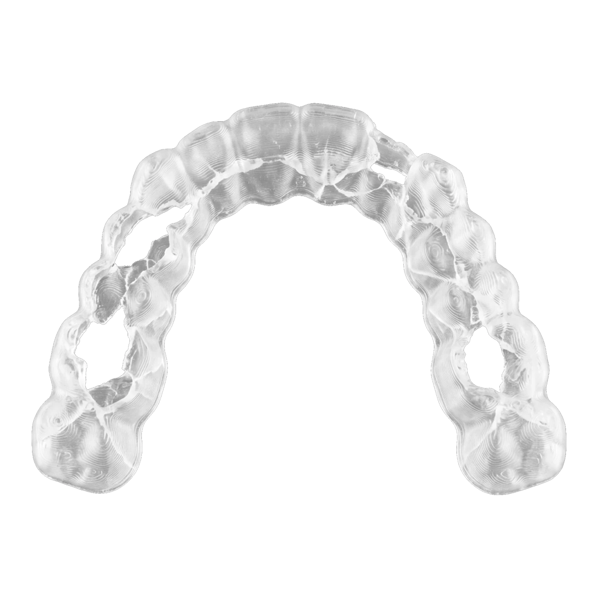
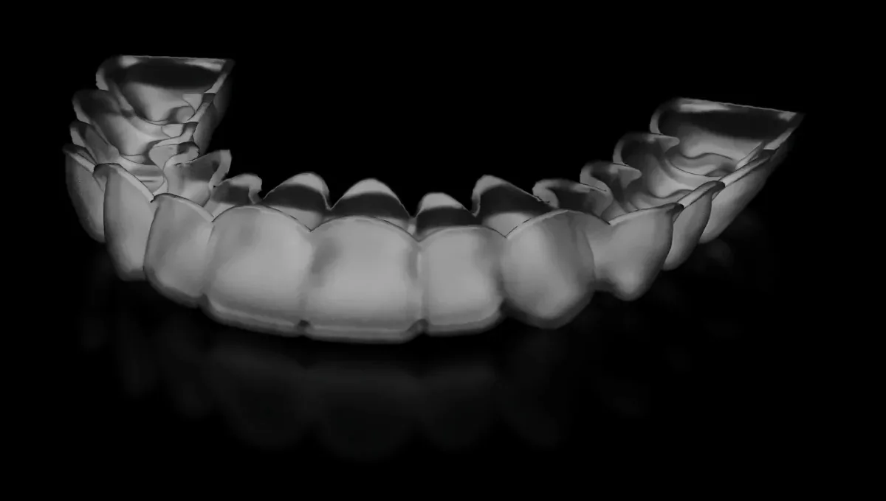

The Unplastic Retainer is the first retainer designed
not to leave persistent microplastics behind.
HSA/FSA eligibleFree US shipping30-day fit guarantee
About
118,000
particles a year, from one retainer, in a lab
simulation of nightly wear.
What fell off
Read the study →Read the whitepaper →
moses’s chewing study, 2026: four PETG retainer pairs, 58,240 cycles at about 11
lb in water at body temperature, about six months of nightly wear, doubled for a
year. A lab simulation, not a study in people. The particles drawn here stand for the
count; they are not to scale.

The Unplastic Retainer is PHA, a biopolymer produced by microbes
rather than petroleum. It performs like a conventional retainer
without shedding persistent microplastics, and it breaks down into a
molecule your body already produces.
★★★★★
“It fits comfortably, feels well made, and is easy to wear and clean.”
★★★★★
“They took care of all the legwork by contacting my dentist to get my official scans.”
★★★★★
“It’s comfortable, well made, and much more pleasant to wear every night than the traditional retainers I’ve used before.”
★★★★★
“I love these new retainers.”
★★★★★
“I know what’s going into my body now.”
HealthWeb design